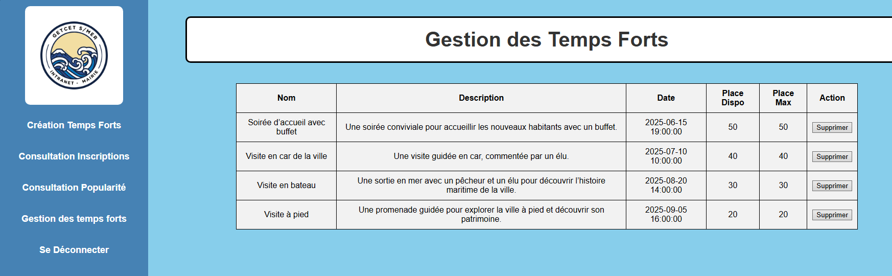

Période : Du 6/12/2024 au 10/03/2025
Langages utilisés : HTML / CSS / PHP
Framework : CodeIgniter 4
Travail : En groupe de deux
Introduction : Ce projet est une application web développée avec PHP et le framework CodeIgniter, avec une gestion de 2 acteurs (Mairie,Arrivant).
Description des besoins :
Bilan personnel : Ce projet m'a permis de pouvoir développer davantage mes compétences Web (PHP) ainsi que mes compétences en matière d'architecture MVC et le fais que j'ai pu me familiariser facilement avec le framework CodeIgniter. C'est le projet auquel je suis le plus satisfait.
Quelques Illustrations du projet :
Illustration de la création de temps forts pour la Mairie :
Illustration inscriptions / participants à chaque temps fort pour la Mairie :
Illustration de la popularité des temps forts pour la Mairie :
Illustration de la consultation des temps forts (possibilité de supprimer un temp fort) pour la Mairie :
Illustration pour consulter le profil (possibilité de le modifier) pour l'Arrivant :
Illustration pour consulter les temps forts proposés et éventuellement s'inscrire pour l'Arrivant :
Illustration pour consulter ses inscriptions (possibilité d’annuler une inscription) pour l'Arrivant :